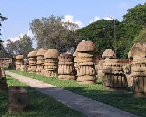
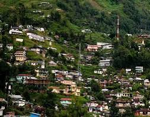
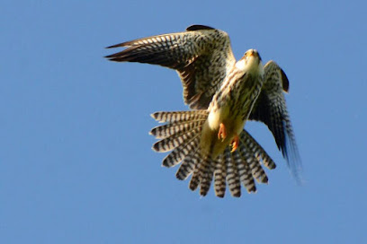

Cities and Places
Kohima
- Kohima War Cemetery: A memorial dedicated to the soldiers who fought in World War II, set in beautifully landscaped gardens.
- State Museum: Showcasing the rich culture and heritage of Nagaland through artifacts, textiles, and traditional items.
- Shilloi Lake: A serene lake surrounded by picturesque hills, perfect for nature lovers and picnics.

- Ao Naga Heritage Village: A cultural village that showcases the traditional lifestyle and crafts of the Ao tribe.
- Kohima Science Centre: An educational facility with interactive exhibits focused on science and technology.
- Zoological Park: A park that houses various species of animals and birds native to the region.
Dimapur
- Dimapur Ao Baptist Church: One of the largest churches in the region, known for its unique architecture and community activities.
- Kachari Ruins: Ancient ruins of a Kachari kingdom with beautiful stone pillars and historical significance.
- Diezephe Craft Village: A vibrant village showcasing traditional crafts and handicrafts of the Naga tribes.

- Chumukedima Village: Known for its scenic beauty and historical sites, ideal for nature lovers.
- Shiva Temple: A prominent temple dedicated to Lord Shiva, known for its serene atmosphere.
- Hongkong Market: A bustling market offering a variety of goods, from clothing to local handicrafts.
Wokha
- Longsa Village: A traditional Naga village known for its vibrant culture and beautiful landscapes.
- Wokha District Museum: A museum showcasing the rich history and heritage of the Wokha district and its people.
- Mount Tiyi: A picturesque hill offering stunning views and a serene environment, ideal for trekking.

- Chakhesang Baptist Church: A significant church known for its beautiful architecture and community activities.
- Wokha Green Park: A lovely park ideal for relaxation and enjoying nature, with walking trails and greenery.
- Terrace Farming Fields: A unique agricultural practice showcasing the ingenuity of local farmers in utilizing the terrain.
Mokokchung
- Ao Senden: The cultural center of the Ao Naga tribe, showcasing traditional architecture and community activities.
- Mokokchung District Museum: A museum that preserves the history and culture of the Ao Naga people and other tribes.
- Chuchuyimlang: A beautiful village known for its scenic beauty and cultural significance.

- Mokokchung Village: Known for its picturesque landscapes and traditional Naga houses.
- Longkhum Village: A village famous for its rich cultural heritage and beautiful views.
- Yimchungrü Village: A village that offers insights into the lifestyle and traditions of the Yimchungrü tribe.
Tuensang
- Tuensang Town: The main town known for its vibrant culture and beautiful landscapes.
- Changsang Festival: A local festival showcasing the traditions and customs of the Chang tribe.
- Tsongkhrop: A scenic spot offering breathtaking views of the surrounding hills and valleys.

- Longkhim Village: A nearby village known for its traditional houses and local handicrafts.
- Yimchunger Village: A village that offers insights into the rich culture and lifestyle of the Yimchunger tribe.
- Shilloi Lake: A serene lake surrounded by hills, perfect for picnics and nature walks.
Other Attractions
Satoi Range
- Overview: The Satoi Range is a stunning mountain range known for its breathtaking landscapes, rich biodiversity, and serene environment.
- Activities: Visitors can enjoy trekking, bird watching, and exploring the unique flora and fauna of the region.
- Accessibility: The range is accessible from various points, with guided tours available for a more immersive experience.

- Nearby Attractions: Explore nearby villages and cultural sites to experience the local traditions and lifestyle.
- Best Time to Visit: The ideal time to visit the Satoi Range is during the cooler months, from October to March.
- Accommodation: Various options are available nearby, including guesthouses and homestays for a local experience.
Shilloi Lake
- Shilloi Lake: A beautiful natural lake surrounded by lush greenery, known for its serene environment and picturesque views. It is a popular spot for picnics and photography.

- Nearby Attractions: Visitors can explore nearby villages to experience local culture, traditions, and unique handicrafts.
Festivals and Cultural Events
Hornbill Festival
- Overview: The Hornbill Festival, celebrated annually in December, showcases the rich cultural heritage of Nagaland, featuring traditional music, dance, and crafts from various Naga tribes.
- Cultural Performances: The festival includes vibrant performances, including traditional dances and music, highlighting the diverse cultures of the Naga tribes.
- Food Stalls: Visitors can enjoy authentic Naga cuisine, offering a variety of local dishes and delicacies.

- Handicrafts and Handloom: The festival features stalls selling intricate handicrafts, textiles, and traditional attire made by local artisans.
- Adventure Activities: Visitors can participate in various activities, including rock climbing and traditional games, adding an adventurous twist to the cultural experience.
- Evening Concerts: The festival concludes each day with lively concerts featuring local and national artists, providing a platform for emerging talents.
Moatsu Festival
- Overview: The Moatsu Festival is celebrated by the Ao Naga tribe in Nagaland to mark the end of the harvesting season and to honor the spirits of nature.
- Timing: It is usually celebrated in the first week of May.
- Activities: The festival features traditional music, dance performances, and various cultural events, showcasing the rich heritage of the Ao Nagas.

- Cultural Significance: The festival emphasizes the importance of community bonding and expresses gratitude for a bountiful harvest.
- Food: Traditional dishes are prepared, and communal feasting is a significant part of the celebration.
- Traditional Attire: Participants often wear traditional Naga attire, adding to the vibrant atmosphere of the festival.
Adventure and Nature Activities
Trekking and Hiking in Nagaland
- Dzukou Valley Trek: A breathtaking trek known for its stunning landscapes and vibrant flowers, especially during the monsoon.
- Zakhu Valley Trek: An adventurous trek that offers panoramic views of the surrounding hills and valleys, ideal for nature enthusiasts.
- Khonoma Village Trek: A trek that takes you through rich cultural heritage and lush greenery, ending in the historic Khonoma village.

- Mount Japfu Trek: A challenging trek to the second-highest peak in Nagaland, offering stunning views and rich biodiversity.
- Intangki Wildlife Sanctuary Trek: A trek through a protected area, perfect for wildlife enthusiasts and bird watchers.
- Angami Hills Trek: A scenic trek that provides insight into the culture of the Angami tribe and their beautiful landscapes.
Birdwatching in Nagaland
- Dzukou Valley: Renowned for its rich biodiversity, this valley offers a chance to spot various species of birds amid stunning landscapes.
- Intangki National Park: A protected area with diverse flora and fauna, ideal for birdwatchers looking to observe rare and endemic bird species.
- Shilloi Lake: A beautiful lake surrounded by hills, attracting numerous migratory birds, perfect for a serene birdwatching experience.

- Chakhesang Hills: Offers picturesque views and a variety of bird species for enthusiastic birdwatchers.
- Pfutsero: Known for its cool climate and vibrant bird life, perfect for a peaceful birdwatching experience.
- Wokha District: Famous for its rich avian diversity, with opportunities to spot both resident and migratory birds.